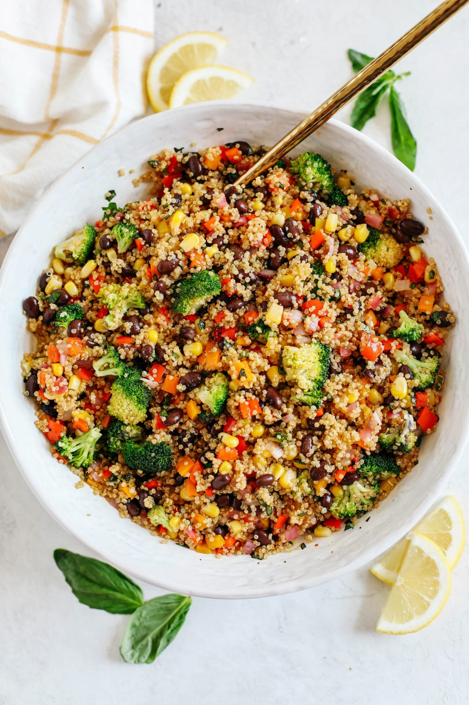
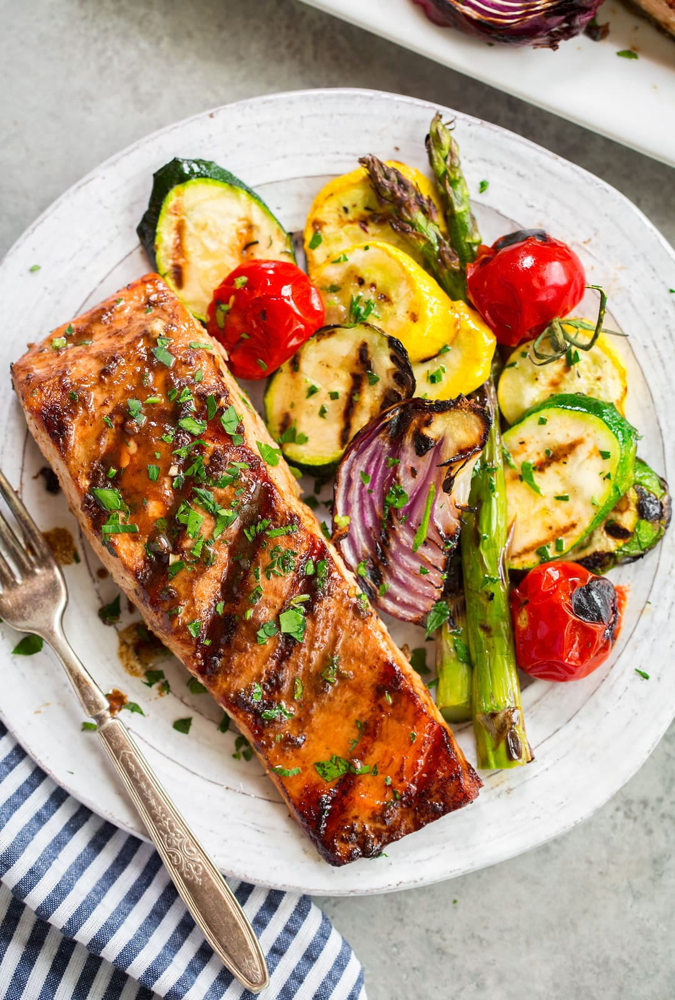
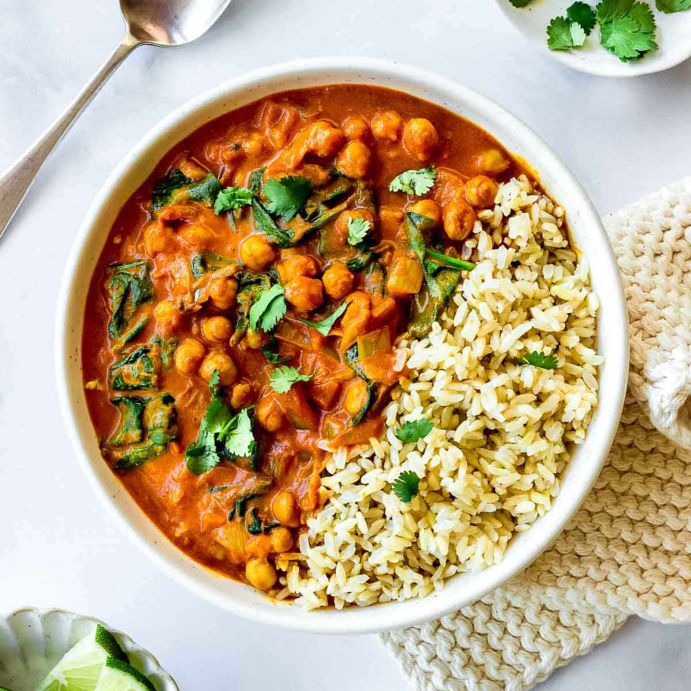

A nutritious salad made with quinoa, mixed greens, cherry tomatoes, bell peppers, and a light olive oil and lemon dressing.
 VegetarianHeart-healthy grilled salmon fillet served with steamed broccoli, carrots, and cauliflower. Seasoned with herbs and lemon.
 Non-VegetarianA flavorful and low-sodium curry made with chickpeas, spinach, tomatoes, and aromatic spices. Served with brown rice.
 Vegetarian